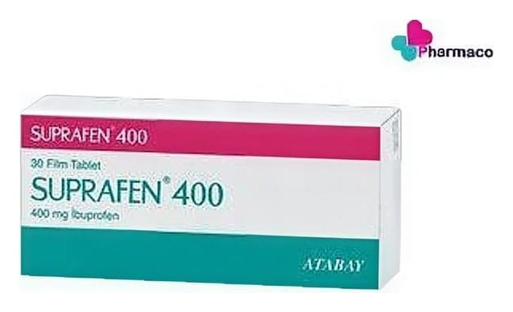

Suprafen 400 mg Film Kaplı Tablet, 30 Adet

Ne için kullanılır
KT · Bölüm 1• SUPRAFEN 20, 30, 50 ve 100 film kaplı tablet içeren blister ambalajda takdim edilmektedir. • Her bir film kaplı tablet 400 mg ibuprofen içerir. • SUPRAFEN’in etkin maddesi olan ibuprofen, non-steroid antiinflamatuar ilaçlar (NSAİİ) olarak adlandırılan ağrı kesici bir ilaç grubuna aittir. • SUPRAFEN bu özellikleri dolayısıyla, aşağıdaki durumlarda kullanılmaktadır: - Eklemlerdeki romatizmal iltihabi hastalıkların (romatoid artrit, osteoartrit ve ankilozan spondilit) belirti ve bulgularının düzeltilmesi, - Gut (damla) hastalığında görülen eklem iltihabı, - Akut kas-iskelet ağrıların rahatlatılması, - Cerrahi operasyondan sonra görülen ağrı, - Adet dönemi ağrılarının giderilmesi (primer dismenore)